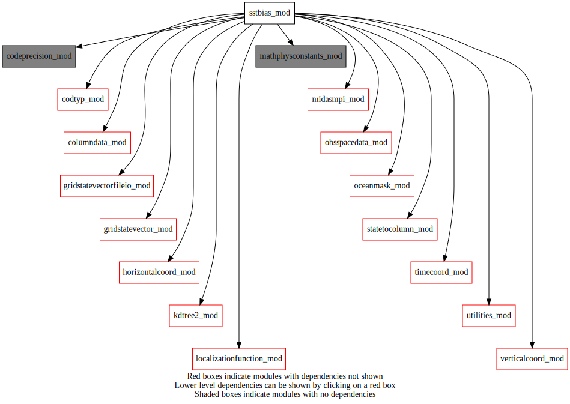
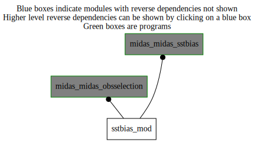

Dependency Diagrams:
 Direct Dependency Diagram¶
 Reverse Dependency Diagram¶
Quick access
- Routines
readnml(),sstb_applysatellitesstbiascorrection(),sstb_computebias(),sstb_getbiascorrection(),sstb_getbiasfrompreviousstate(),sstb_getgriddedbias(),sstb_getgriddedobs()Needed modules
obsspacedata_mod: MODULE obsSpaceData_mod (prefix=’obs’ category=’6. High-level data objects’)
horizontalcoord_mod: MODULE HorizontalCoord_mod (prefix=’hco’ category=’7. Low-level data objects’)
verticalcoord_mod: MODULE verticalcoord (prefix=’vco’ category=’7. Low-level data objects’)
timecoord_mod: MODULE timeCoord (prefix=’tim’ category=’7. Low-level data objects’)
kdtree2_mod: MODULE kdtree2_mod (prefix=’kdtree2’ category=’8. Low-level utilities and constants’)
codeprecision_mod: MODULE codePrecision_mod (prefix=’pre’ category=’8. Low-level utilities and constants’)
mathphysconstants_mod: MODULE MathPhysConstants_mod (prefix=’mpc’ category=’8. Low-level utilities and constants’)
utilities_mod: MODULE utilities_mod (prefix=’utl’ category=’8. Low-level utilities and constants’)
midasmpi_mod: MODULE midasMpi_mod (prefix=’mmpi’ category=’8. Low-level utilities and constants’)
codtyp_mod: MODULE codtyp_mod (prefix=’codtyp’ category=’8. Low-level utilities and constants’)
gridstatevector_mod: MODULE gridStateVector_mod (prefix=’gsv’ category=’6. High-level data objects’)
gridstatevectorfileio_mod: MODULE gridStateVectorFile_mod (prefix=’gio’ category=’4. Data Object transformations’)
oceanmask_mod: MODULE oceanMask_mod (prefix=’ocm’ category=’7. Low-level data objects’)
localizationfunction_mod: MODULE localizationFunction_mod (prefix=’lfn’ category=’2. B and R matrices’)
columndata_mod: MODULE columnData_mod (prefix=’col’ category=’6. High-level data objects’)
statetocolumn_mod: MODULE stateToColumn (prefix=’s2c’ category=’4. Data Object transformations’)Variables
Subroutines and functions
- subroutine sstbias_mod/sstb_computebias(obsdata, hco, vco)¶
- Purpose
compute bias for SST satellite data with respect to insitu data
- Arguments
obsdata [struct_obs ,inout] :: obsSpaceData
hco [struct_hco ,inout,pointer] :: horizontal grid structure
vco [struct_vco ,in,pointer] :: vertical grid structure
- Called from
- Call to
readnml(),mmpi_setup_lonbands(),mmpi_setup_latbands(),gsv_allocate(),gio_readfromfile(),ocm_readmaskfromfile(),ocm_deallocate(),gsv_deallocate(),sstb_getgriddedobs(),sstb_getgriddedbias(),sstb_getbiasfrompreviousstate()
- subroutine sstbias_mod/sstb_getgriddedobs(obsdata, obsgrid, countobsglob, countobsloc, hco, openwater, instrument[, dayornight_opt])¶
- Purpose
put observations of a given family on the grid
- Arguments
obsdata [struct_obs ,inout] :: obsSpaceData
obsgrid (*,*) [real ,inout] :: observations on the grid
countobsglob [integer ,out] :: global number of data found (all procs)
countobsloc [integer ,out] :: number of data found (current MPI proc)
hco [struct_hco ,in,pointer] :: horizontal grid structure
openwater (*,*) [logical ,in] :: open water points (.true.)
instrument [character ,in] :: name of instrument
- Options
dayornight_opt [character ,in,] :: look for daytime or nighttime obs
- Called from
- Call to
obs_numheader(),obs_headelem_i(),codtyp_get_codtyp(),obs_elem_c(),obs_headelem_r(),kdtree2_3dposition(),kdtree2_create(),kdtree2_r_nearest(),utl_abort(),obs_bodyelem_r(),mmpi_allreduce_sumreal8scalar()
- subroutine sstbias_mod/sstb_getgriddedbias(satellitegrid, insitugrid, nobsglob, nobsloc, hco, vco, mask, openwater, sensor, numberopenwaterpoints, dayornight)¶
- Purpose
compute the satellite SST data bias estimation field on a grid
- Arguments
satellitegrid (*,*) [real ,inout] :: gridded satellite data
insitugrid (*,*) [real ,inout] :: gridded insitu data
nobsglob [integer ,in] :: number of data on all procs
nobsloc [integer ,in] :: number of data on the current MPI proc
hco [struct_hco ,in,pointer] :: horizontal grid structure
vco [struct_vco ,in,pointer] :: vertical grid structure
mask (*,*) [logical ,in] :: land-ocean mask
openwater (*,*) [logical ,in] :: open water points (.true.)
sensor [character ,in] :: current sensor name
numberopenwaterpoints [integer ,in] :: number of open water points to allocate kd-tree work arrays
dayornight [character ,in] :: look for daytime or nighttime obs
- Called from
- Call to
utl_abort(),lfn_setup(),kdtree2_3dposition(),kdtree2_create(),gsv_allocate(),gio_readfromfile(),tim_getdatestamp(),kdtree2_r_nearest(),lfn_response(),gio_writetofile(),gsv_deallocate()
- subroutine sstbias_mod/sstb_getbiascorrection(statevector, column, obsdata, hco, sensor, dayornight)¶
- Purpose
To compute bias correction and put it into obsSpace data. Columns from input field are interpolated to obs location
- Arguments
statevector [struct_gsv ,inout] :: state vector containing bias estimation field
column [struct_columndata ,in] :: column data
obsdata [struct_obs ,inout] :: obsSpaceData
hco [struct_hco ,in,pointer] :: horizontal grid
sensor [character ,in] :: current sensor name
dayornight [character ,in] :: look for daytime or nighttime obs
- Called from
- Call to
s2c_nl(),obs_numheader(),obs_elem_c(),obs_headelem_i(),obs_bodyelem_r(),obs_headelem_r(),col_getelem()
- subroutine sstbias_mod/readnml()¶
- Purpose
Read the namelist namSSTbiasEstimate
- Called from
gio_readfile(),gio_writetofile(),odbf_setup(),sstb_computebias(),sstb_applysatellitesstbiascorrection()- Call to
- subroutine sstbias_mod/sstb_applysatellitesstbiascorrection(obsdata, hco, vco, column)¶
- Purpose
To apply bias satellite SST data bias correction and put it into obsSpace data. Columns from input field are interpolated to obs location
- Arguments
obsdata [struct_obs ,inout] :: obsSpaceData
hco [struct_hco ,inout,pointer] :: horizontal grid structure
vco [struct_vco ,in,pointer] :: vertical grid structure
column [struct_columndata ,in] :: column data
- Called from
- Call to
readnml(),gsv_allocate(),utl_abort(),gio_readfromfile(),sstb_getbiascorrection(),gsv_deallocate()
- subroutine sstbias_mod/sstb_getbiasfrompreviousstate(hco, vco, sensor, dayornight)¶
- Purpose
to get a satellite SST data bias estimate from the previous state if data is missing. or there are no insitu data for the current dateStamp, hence, unable to compute bias estimates for the satellite data.
- Arguments
hco [struct_hco ,inout,pointer] :: horizontal grid structure
vco [struct_vco ,in,pointer] :: vertical grid structure
sensor [character ,in] :: sensor name
dayornight [character ,in] :: look for daytime or nighttime bias estimation
- Called from
- Call to
utl_abort(),gsv_allocate(),gio_readfromfile(),tim_getdatestamp(),gio_writetofile(),gsv_deallocate()
{kind=link}
{kind=link}